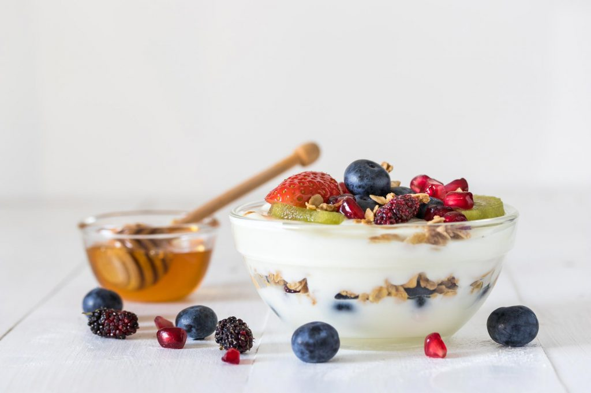
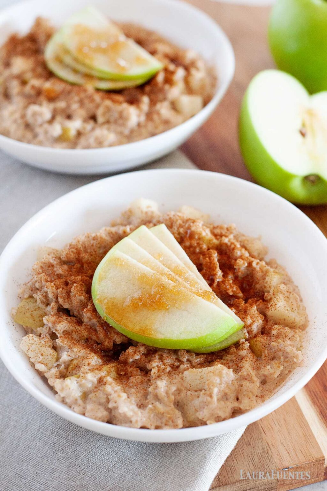
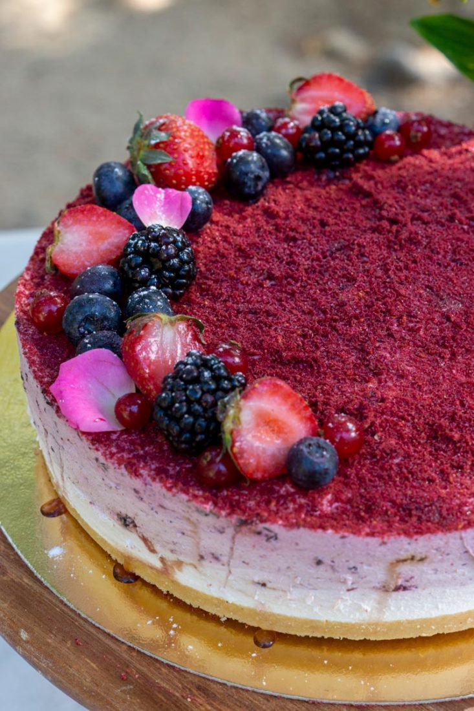

Un postre sencillo y natural que combina la cremosidad del yogur con la frescura de las frutas y el toque dulce de la miel. Perfecto para disfrutar al final de una comida ligera o como merienda saludable.

Ingredientes (2 personas):
Yogur natural (2 unidades)
Fresas (100 g)
Plátano (1)
Miel (1 cucharada)
Nueces troceadas (1 cucharada)
Hojas de menta para decorar
Yogur con avena, manzana y canela
Un postre fresco y equilibrado que combina la suavidad del yogur con la textura de la avena y el aroma de la canela. Ideal para comenzar el día con energía o disfrutar de un final ligero y saludable.

Ingredientes (2 personas):
Yogur natural o griego sin azúcar (2 unidades)
Copos de avena (3 cucharadas)
Manzana (1)
Canela en polvo (1 cucharadita)
Miel o sirope natural (1 cucharada)
Nueces o almendras troceadas (al gusto)
Mousse de yogur y frutos del bosque
Una mousse ligera y refrescante que combina el sabor suave del yogur con la acidez natural de los frutos del bosque. Un postre bajo en grasa y rico en antioxidantes, perfecto para cuidar el paladar y la salud.

Ingredientes (4 personas):
Yogur natural (250 g)
Claras de huevo (2)
Miel (2 cucharadas)
Frutos del bosque variados (150 g)
Gelatina neutra (2 hojas)
Hojas de menta para decorar
Mousse de cacao y aguacate
Una versión saludable del clásico postre de chocolate, elaborada con aguacate maduro y cacao puro. Su textura cremosa y sabor intenso lo convierten en una opción deliciosa y nutritiva sin necesidad de azúcar refinado.